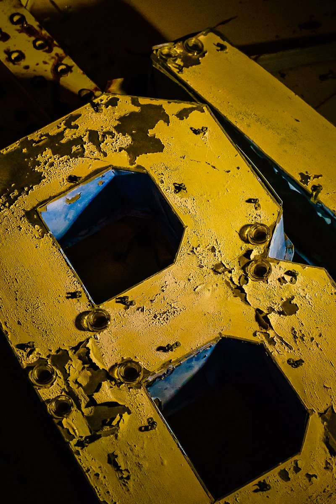
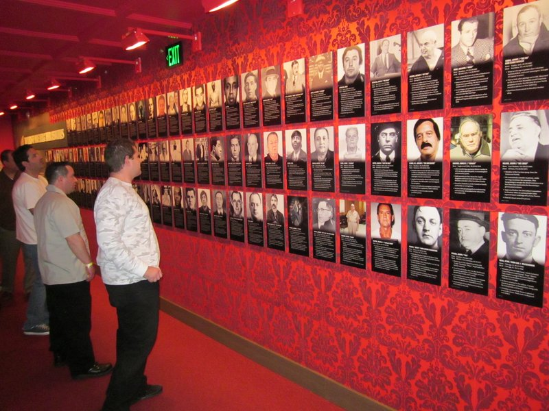
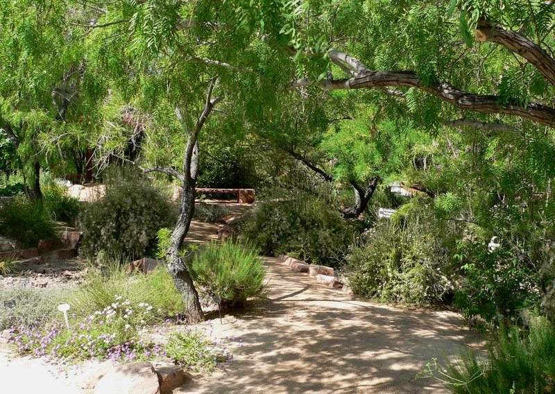

Day 1 – The STRAT SkyPod · Neon Museum · The Mob Museum · Springs Preserve
🏨 From Hotel: 🚶 20 min · 🚕 6 min → The STRAT SkyPod
1. The STRAT SkyPod
↳ The STRAT tower stands 1,149 feet on the north Strip, the tallest freestanding observation structure west of the Mississippi. The SkyPod deck at 869 feet offers 360-degree views across the Strip and the Mojave Desert.
🏛️ Monday - Thursday 12:00pm - 11:59pm
🏛️ Friday - Sunday 10:00am - 11:59pm
⏰ ~1 hr 30 min
.jpg)
🚶 25 min · 🚕 5 min → Neon Museum
2. Neon Museum
↳ The Neon Museum preserves over 200 retired neon signs from casinos and hotels in an outdoor collection called the Neon Boneyard. Signs span the 1930s through the early 2000s and trace the city's visual identity as a pioneer of large-scale electric advertising.
🏛️ Daily 9:00am - 3:00pm
⏰ ~1 hr 30 min

🚶 10 min · 🚕 3 min → The Mob Museum
3. The Mob Museum
↳ The Mob Museum occupies the former federal courthouse where the 1950 Kefauver Senate hearing on organized crime was held. Four floors trace organized crime from Prohibition through the mob-connected construction of the city, with FBI wiretap equipment and the St. Valentine's Day Massacre wall panel.
🏛️ Daily 9:00am - 9:00pm
⏰ ~2 hr

🚕 10 min → Springs Preserve
4. Springs Preserve
↳ Springs Preserve marks the site of the original Las Vegas Springs, the desert water source that drew the city's first settlement. The 180-acre grounds include botanical gardens, desert wildlife habitats, and a museum tracing the natural and human history of the valley.
🏛️ Thursday - Monday 9:00am - 4:00pm
🚫 Closed Tuesday - Wednesday
⏰ ~2 hr 30 min

🚕 12 min → hotel
🗓️ Weekly Closures
Museums · Closed Tuesday – Wednesday
📅 Tours
Viator
↳ Small-group guided walk along the Strip with a local covering Bellagio fountains, the Venetian canals, and lesser-known corners off the main corridor.
🕐 6:00pm · ⏳ 2 hr 30 min · 👥 12 max
🚶 20 min · 🚕 5 min
↳ Small-group minibus tour of mob history covering sites of infamous murders, car bombings, and mob-controlled casinos from the 1940s through the 1980s.
🕐 10:00am · ⏳ 2 hr · 👥 Small group
🚕 8 min
↳ Helicopter flight from Boulder City over Hoover Dam, Lake Mead, and the Grand Canyon West Rim — panoramic Mojave Desert and Colorado River views.
🏨 ↔ 🚐
🕐 8:00am · ⏳ 4 hr · 👥 Small group
↳ Half-day guided tour to Hoover Dam with a stop at the bypass bridge overlook and the visitor center. The guide covers construction history and the engineering of the 17-turbine power plant.
🏨 ↔ 🚐
🕐 8:00am · ⏳ 5 hr · 👥 Small group
↳ Morning half-day trip to Valley of Fire State Park with stops at Atlatl Rock petroglyphs, the White Domes, and red Aztec sandstone formations.
🏨 ↔ 🚐
🕐 7:30am · ⏳ 5 hr · 👥 Small group
GetYourGuide
↳ Helicopter tour from Boulder City to the Grand Canyon West Rim with views over Hoover Dam, Lake Mead, and Black Canyon.
🏨 ↔ 🚐
🕐 8:00am · ⏳ 4 hr · 👥 Small group
↳ Guided tour to Nevada's oldest state park, with stops at the Visitor Center, White Domes Trail, and Fire Wave formation.
🏨 ↔ 🚐
🕐 7:30am · ⏳ 5 hr · 👥 Small group
↳ Half-day guided tour to Hoover Dam with access to the bypass bridge overlook and the dam visitor center.
🏨 ↔ 🚐
🕐 8:00am · ⏳ 5 hr · 👥 Small group
↳ Helicopter tour that descends to the Grand Canyon floor beside the Colorado River, then returns over the Mojave.
🏨 ↔ 🚐
🕐 8:30am · ⏳ 4 hr 30 min · 👥 Small group
↳ Evening minibus tour along the Strip and downtown covering major casino landmarks, the Fremont Street Experience, and the city's illuminated skyline.
🏨 ↔ 🚐
🕐 7:30pm · ⏳ 3 hr · 👥 Small group
TripAdvisor
↳ Guided Strip walk covering the Bellagio fountains, Caesars Palace, the Venetian, and lesser-known architectural curiosities with narration on the casino construction era.
🕐 6:00pm · ⏳ 2 hr · 👥 Small group
🚶 20 min · 🚕 5 min
↳ Guided walk through downtown mob history covering Binion's Gambling Hall, historic crime sites, and Fremont Street landmarks, ending at The Mob Museum.
🕐 10:00am · ⏳ 1 hr 30 min · 👥 Small group
🚕 8 min
↳ Full-day motorcoach tour to the West Rim with Skywalk access, Eagle Point overlook, and Guano Point panoramic views.
🏨 ↔ 🚐
🕐 7:00am · ⏳ 10 hr · 👥 Small group
↳ Half-day tour to Hoover Dam with the bypass bridge overlook and the dam visitor center covering construction history and the 17-turbine power plant.
🏨 ↔ 🚐
🕐 8:00am · ⏳ 5 hr · 👥 Small group
↳ Morning half-day trip to Valley of Fire with guided stops at Atlatl Rock petroglyphs, the White Domes, and the valley's red-sandstone formations.
🏨 ↔ 🚐
🕐 7:00am · ⏳ 5 hr · 👥 Small group
☕ Cappuccino
Café Cutò · 4.5⭐ · 100+ reviews
Vesta Coffee Roasters · 4.7⭐ · 200+ reviews
🏛️ Monday - Saturday 7:00am - 5:00pm
🏛️ Sunday 8:00am - 4:00pm
🚕 10 min
🫕 Restaurants Near Hotel
Mother Wolf · 4.5⭐ · 200+ reviews
↳ Roman trattoria by chef Evan Funke; hand-rolled pasta, wood-fired preparations.
🏛️ Daily 5:00pm - 10:30pm
🚕 1 min
Don's Prime · 4.4⭐ · 100+ reviews
↳ Upscale steakhouse serving USDA Prime and Japanese A5 wagyu; seafood menu.
🏛️ Daily 5:30pm - 10:30pm
🚕 1 min
Komodo · 4.3⭐ · 150+ reviews
↳ Southeast Asian menu of crispy rice, short ribs, and sushi by David Grutman.
🏛️ Daily 5:00pm - 11:00pm
🚕 1 min
🍽️ Downtown Restaurants
Carson Kitchen · 4.6⭐ · 800+ reviews
↳ Creative American small plates; deviled eggs and crispy chicken skin.
🏛️ Tuesday - Saturday 11:00am - 10:00pm · Sunday 10:00am - 9:00pm
🚫 Closed Monday
Esther's Kitchen · 4.7⭐ · 1200+ reviews
↳ Wood-fired Italian in the Arts District; housemade pasta and natural wines.
🏛️ Tuesday - Friday 11:30am - 2:30pm
🏛️ Tuesday - Sunday 5:00pm - 10:00pm
🚫 Closed Monday
PublicUs · 4.5⭐ · 600+ reviews
↳ All-day Arts District café and bar; avocado toast, burgers, craft cocktails.
🏛️ Daily 8:00am - 12:00am
La Strega · 4.6⭐ · 400+ reviews
↳ Neighborhood Italian trattoria in the Arts District; wood-fired pizza and pasta.
🏛️ Wednesday - Monday 5:00pm - 10:00pm
🚫 Closed Tuesday
Golden Steer Steakhouse · 4.5⭐ · 1500+ reviews
↳ Open since 1958; red booths, Rat Pack memorabilia, dry-aged prime beef.
🏛️ Daily 4:30pm - 10:30pm
🍮 Local Tastes
Shrimp Cocktail
↳ The Golden Gate Hotel introduced the shrimp cocktail in 1959 and it became the most-ordered appetizer in the US through the 1970s. Still served at the original bar.
Prime Rib
↳ The prime rib carving station was a casino loss-leader from the 1950s. The Golden Steer has served large cuts at modest prices since 1958, rooted in that era.
In-N-Out Burger
↳ The Strip location is among the busiest in the chain, open until 1:30am on weekends. The Double-Double Animal Style with grilled onions is the standard after-hours order.
Breakfast Buffet
↳ The casino buffet was invented in 1946 at the El Rancho to keep players from leaving the floor. The breakfast buffet with prime cuts and made-to-order eggs is a Strip institution.
🎭 Shows, Performances & Concerts
Sphere
↳ World's largest spherical venue; 160,000 sq ft of 16K LED wraps the audience. Rotating concert residencies and original immersive cinematic productions.
🚶 25 min · 🚕 6 min
Cirque du Soleil · O
↳ Cirque du Soleil's aquatic production — acrobatics, synchronized swimming, and aerial acts over a 1.5-million-gallon pool at the Bellagio, running since 1998.
🚶 20 min · 🚕 5 min
Penn & Teller at Rio
↳ Penn & Teller's residency at the Rio — magic, comedy, and illusion with post-show meet-and-greets after every performance.
🚕 8 min
T-Mobile Arena
↳ 20,000-seat arena behind the Park MGM — home of the Vegas Golden Knights and the flagship concert venue for major touring acts and boxing events year-round.
🚶 20 min · 🚕 5 min
🚆 Train Stations Near Hotel
No train stations in Las Vegas.
⛲️ Day Trips by Train
No day trips from Las Vegas by train. No intercity rail connects the city to neighboring destinations.
⭐ Michelin Restaurants
No Michelin-starred restaurants in Las Vegas.